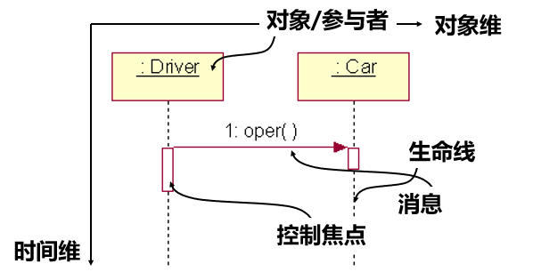
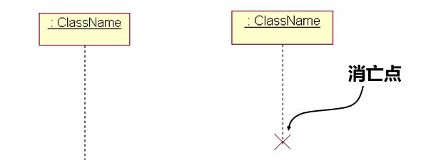
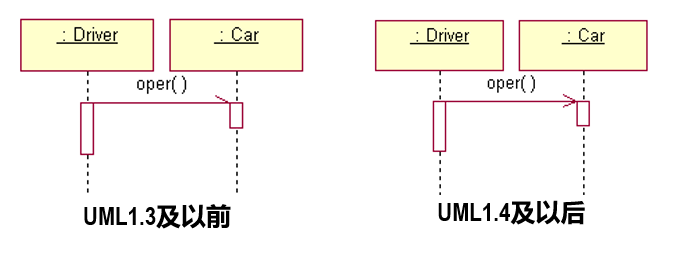
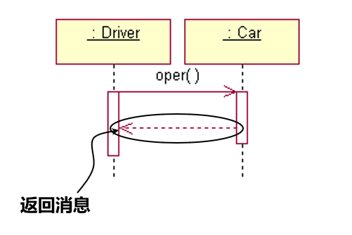
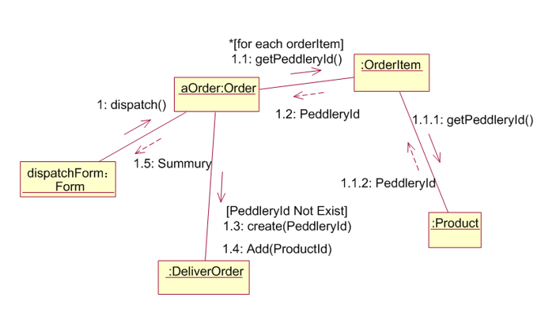

交互图概述
交互图（interaction diagram）是用来描述对象之间以及对象与参与者之间的动态协作以及协作过程中行为次序的图形文档。
通常用于描述一个用例的行为，显示该用例涉及的对象及对象之间的消息传递情况。
包括：
1.顺序图（sequence diagram），描述对象按照时间顺序进行消息交换。
2.协作图（collaboration diagram），描述系统成分如何协同工作。
顺序图
顺序图是显示对象之间交互的图，这些对象是按时间顺序排列的。
显示参与交互的对象及对象之间消息交互的顺序

对象的三种命名方式

生命线
生命线是向下延申的虚线，表示对象生存时间。

控制焦点
控制焦点（Focus of Control）又称为激活期（Activation），用生命线上的小矩形表示，在这个时间段内，对象执行相应操作。

消息
调用消息：消息的发送者把控制传递给消息的接收者，等待接收者返回或放弃控制。

异步消息：消息的发送者把控制传递给消息的接收者，然后继续自己的工作，不等待接收者返回或放弃控制。

返回消息：表示从过程调用返回，如果是过程消息返回不用画出。

协作图
主要元素
- 链：连接器，表示对象之间的语义连接，链是关联的一个实例。
- 消息编号：消息的编号有两种，一种是无层次编号，简单直观；另一种是嵌套编号，易于表示消息的包含关系。
- 迭代标记：* 表示,表示循环，通常还有迭代表达式，用来说明循环规则。
- 监护条件：表示分支，表示“如果条件为true，才发送消息”。

最后更新： 2018年06月02日 04:08